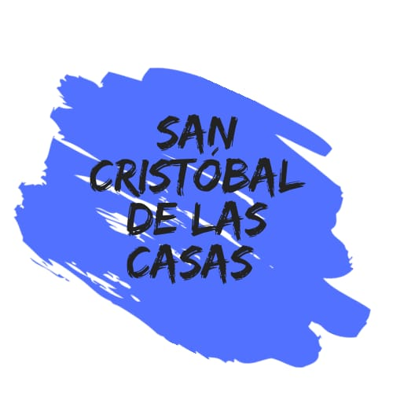
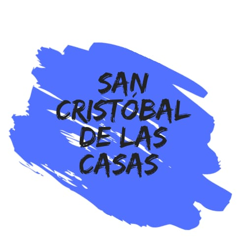

El Museo Nacional de Antropología (MNA) es uno de los recintos museográficos más importantes de México y de América. Está concebido para albergar y exhibir el legado arqueológico de los pueblos de Mesoamérica, así como para dar cuenta de la diversidad étnica actual del país. El edificio actual del MNA fue construido entre 1963 y 1964 en el Bosque de Chapultepec por instrucción del presidente Adolfo López Mateos, quien lo inauguró el 17 de septiembre de 1964. Actualmente, el edificio del MNA posee 22 salas de exposición permanente, dos salas de exposiciones temporales y tres auditorios. En su interior se encuentra la Biblioteca Nacional de Antropología e Historia. La colección del Museo Nacional de Antropología está conformada por numerosas piezas arqueológicas y etnográficas provenientes de todo México. Entre algunas de las piezas más emblemáticas de la colección se cuenta la Piedra del Sol —que es el corazón mismo del museo—, las cabezas colosales de la cultura olmeca, las monumentales esculturas teotihuacanas dedicadas a los dioses del agua, la tumba de Pakal, las ofrendas funerarias de Monte Albán, las estelas de Xochicalco, así como un atlante tolteca traído desde Tollan-Xicocotitlan y el Monolito de Tláloc que custodia la entrada al museo.